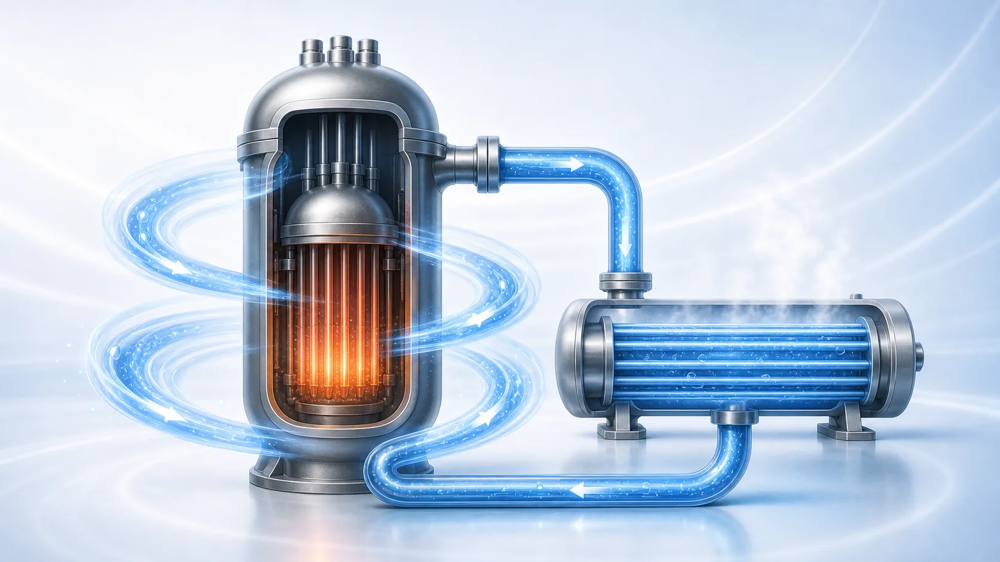
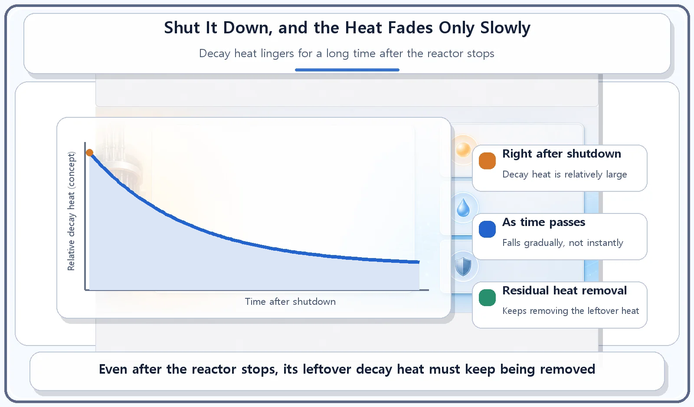
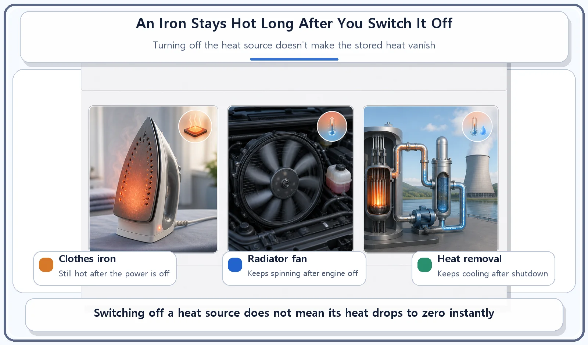

Reactor Components · 070
The Iron Stays Hot After You Switch It Off — Why Reactors Need Residual Heat Removal
Stopping the chain reaction does not stop the heat. Decay heat lingers, so cooling has to continue long after shutdown.

Shutting a reactor down stops the chain reaction, but not the heat. Fission products already in the core keep releasing decay heat as they decay radioactively. It falls gradually but takes a long time to disappear, so the residual heat removal system keeps cooling the core after shutdown.
Unplugged, but still too hot to touch
When you finish ironing and switch the iron off, the soleplate stays hot enough to burn your hand for quite a while. A car that has been driven hard often doesn't go quiet the moment you turn off the engine, either: the radiator fan may keep running for a bit to cool the engine down. Turning off the switch on a heat source doesn't make the heat that has already built up disappear in an instant.
A nuclear reactor works the same way. When its protection system detects a danger signal, it shuts the reactor down at once. But even after the reactor stops, one job remains: to keep cooling the heat that is left behind. That job belongs to the residual heat removal system.
Why is a shut-down reactor still hot?
Shutting down a reactor means inserting the control rods to stop the nuclear fission chain reaction. Once the chain reaction stops, the heat produced by new fissions drops sharply.
But the core still holds the fission products that have already been made, the fragments left over when uranium nuclei split. These fragments are radioactive, and as they undergo radioactive decay they keep releasing heat. This is called decay heat.
Right after the chain reaction stops, decay heat remains at a substantial level. It falls gradually as time passes, but it takes a long time to disappear completely. So if this decay heat is not removed continuously after shutdown, the temperature of the core can climb to a dangerous level.

Residual heat removal: cooling that continues after the stop
The residual heat removal system continuously removes the decay heat left in the core after shutdown, bringing the core temperature down to a safe level and keeping it there.
The cooling path is matched to the situation. Right after shutdown, when decay heat is still relatively large, heat may be removed through the steam generators, the same large heat exchangers that carry the core's heat away to make steam during normal operation. Later, once the decay heat has dropped enough, the plant can switch to having the residual heat removal system circulate the coolant itself and carry the heat away directly. The exact conditions for switching vary by reactor type and plant.
Just as an iron stays hot after you switch it off, a reactor has only had its chain-reaction "switch" turned off. The decay heat left in the core still has to be cooled by the residual heat removal system.
The same physics applies outside the reactor, too. Pools that store spent nuclear fuel (used fuel taken out of the reactor) also keep giving off decay heat, so they need cooling of their own for a long time as well.

Where people get mixed up
"Shut the reactor down and the heat drops to zero at once." Not so. Shutting down a reactor stops the fission chain reaction. It does not instantly eliminate the heat produced in the core. Decay heat remains as a leftover heat source, so continuous cooling is needed.
The reactor protection system and the residual heat removal system work in sequence. The protection system's job is to stop the reactor when a danger signal is detected. The residual heat removal system's job is to keep removing the leftover heat after it has stopped. You can think of residual heat removal as the step that picks up where the protection system leaves off.
| Reactor protection system | Residual heat removal system | |
|---|---|---|
| When | When a danger signal is detected | After the reactor has shut down |
| Job | Stops the chain reaction (reactor trip) | Keeps removing the leftover decay heat |
| Order | First | Next, and for a long time afterwards |
The short version
- Even after a reactor is shut down, decay heat from the radioactive decay of fission products remains for a while.
- The residual heat removal system keeps removing that decay heat and holds the core temperature at a safe level.
- As with an iron or a car's radiator fan, switching off the heat source doesn't make the leftover heat vanish right away.
- If the reactor protection system is the part that stops the reactor, the residual heat removal system is the part that keeps it cool afterwards.
Stopping a reactor is only half the safety story. The other half is patient, continuous cooling, long after the chain reaction has gone quiet.